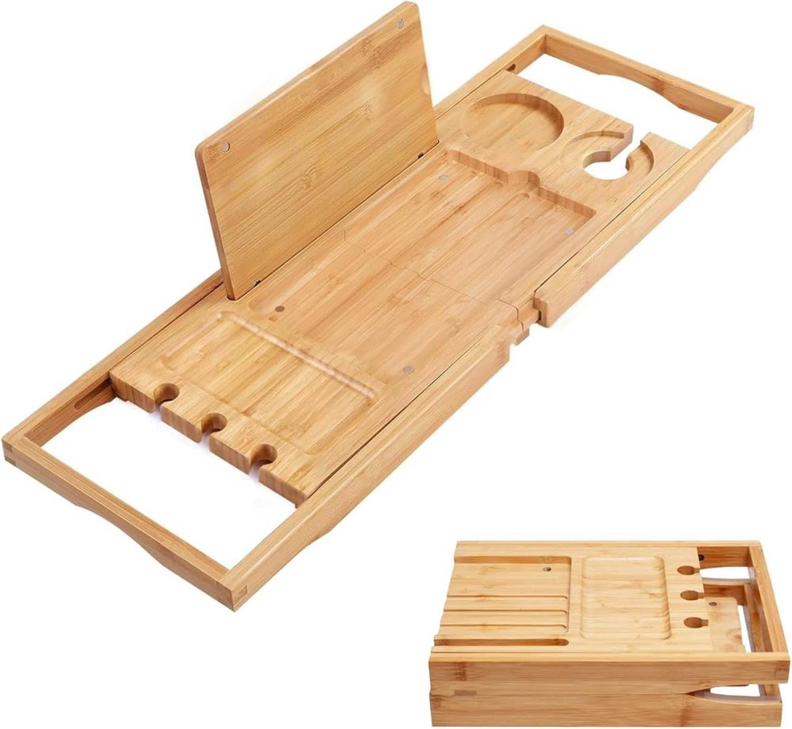
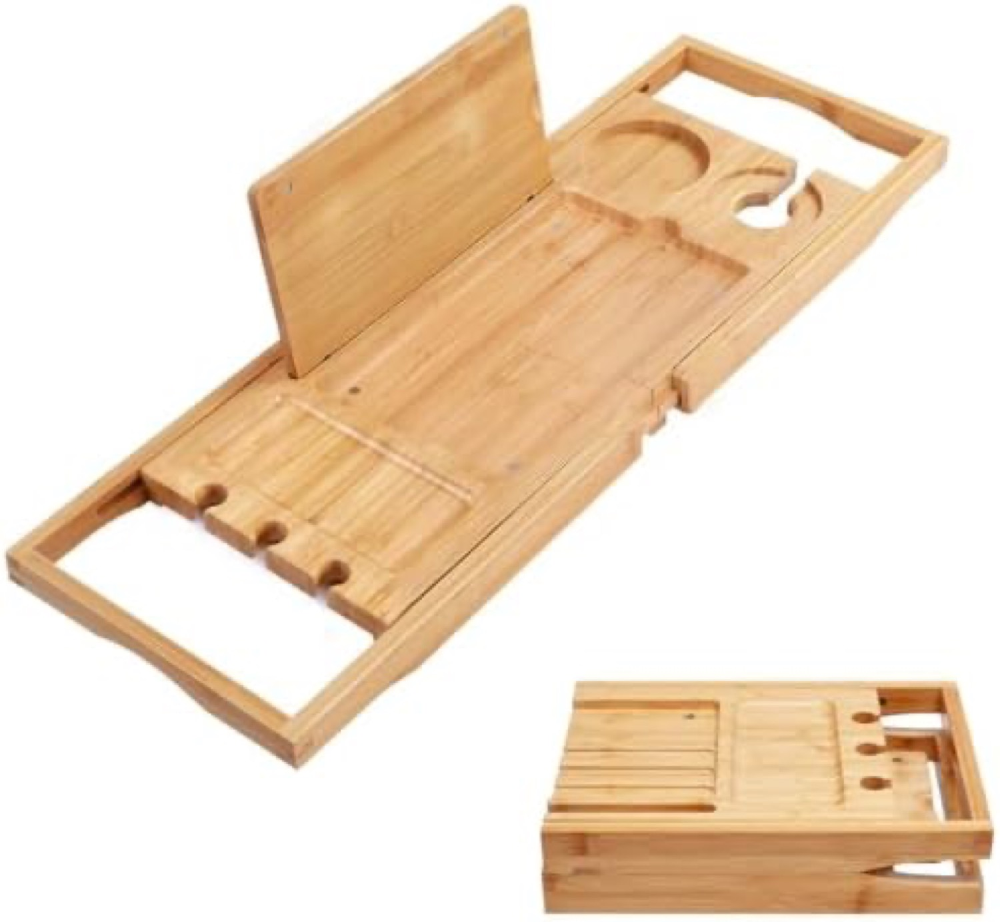
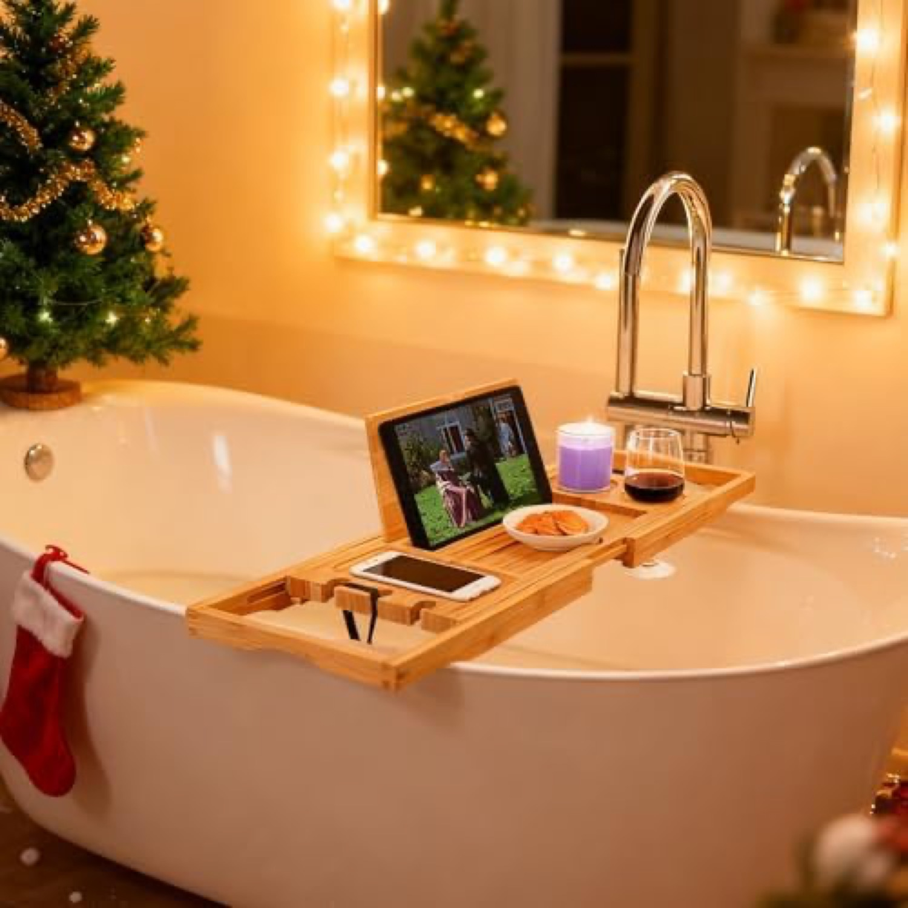
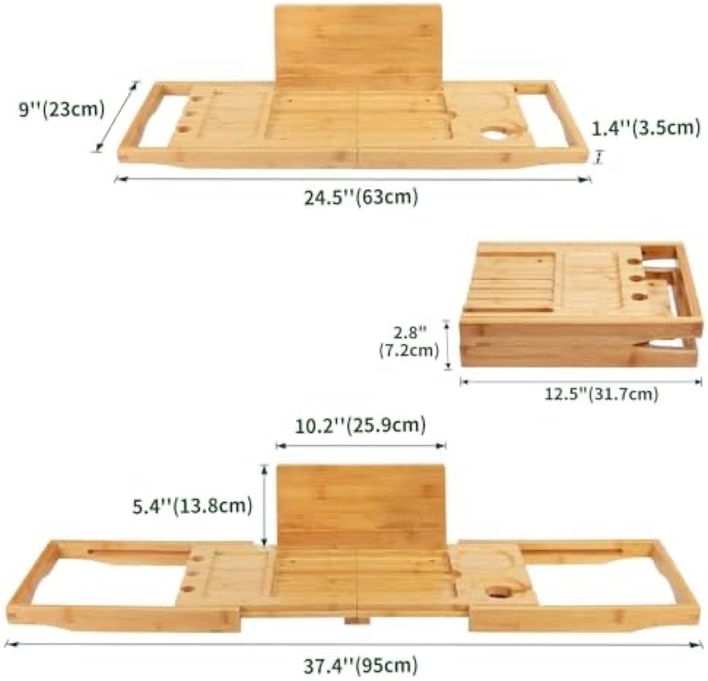
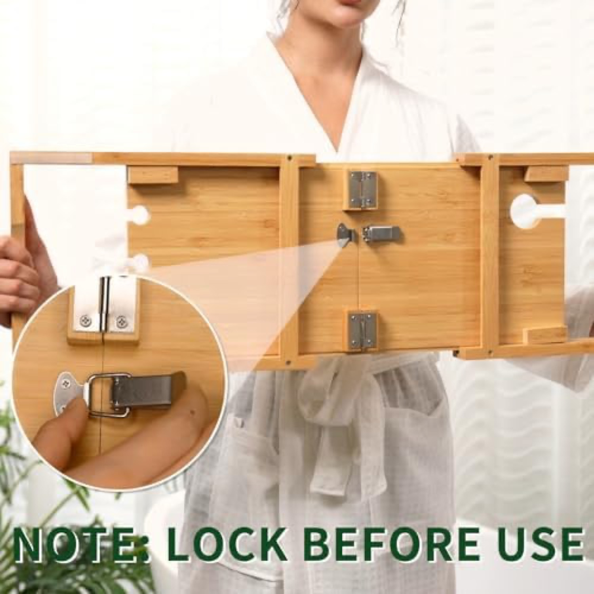
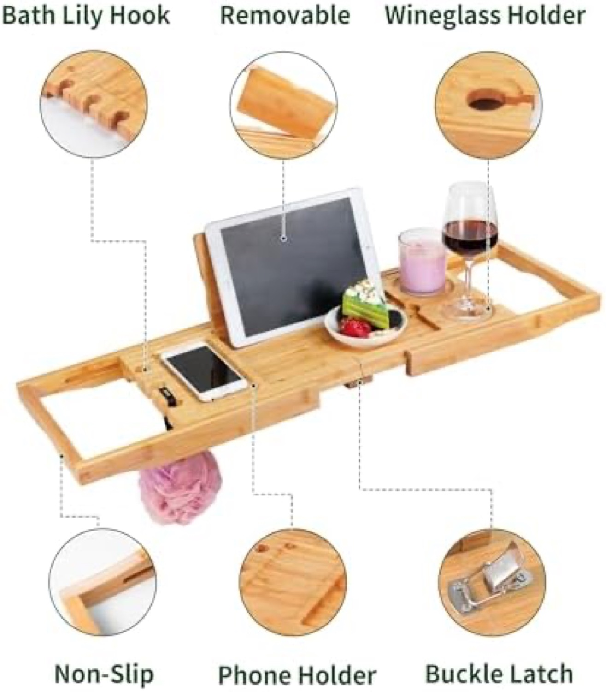
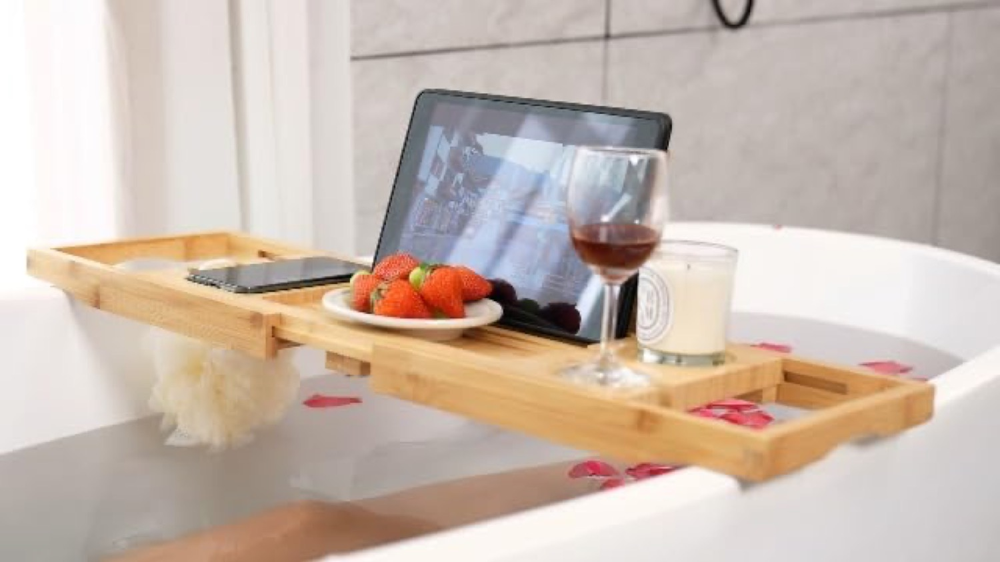

The bamboo review leader (4,647) and Amazon's Choice. Heaviest advertiser in the niche. Brand sold by SafeHouseware.竹レビュー首位（4,647）かつAmazon's Choice。ニッチ最多出稿。販売はSafeHouseware。







Verdict: High. Eight images, two videos, a rich "From the Brand" A+ with Store modules, a magnetic tablet stand demo. The benchmark to match. Its one structural weakness: it extends to only 95cm.評価：高。画像8、動画2、充実の「From the Brand」A+＋Storeモジュール、マグネット式スタンドの実演。目標水準。唯一の弱点：最大95cmまで。
Polished, but it tells no mold-resistance story (its own reviews say it molds), the "book stand" only displays a closed book, and it tops out at 95cm.洗練されているが、防カビの訴求がなく（自身のレビューがカビを指摘）、「本立て」は閉じた本のみ、最大95cm止まり。
Owns the top-of-search Sponsored Brands banner (logo + "竹製バスタブトレー" headline + "Shop Utoplike" Store + 3 products). The premium billboard of the category.検索上部のSponsored Brandsバナーを保有（ロゴ＋「竹製バスタブトレー」＋「Shop Utoplike」Store＋3商品）。カテゴリの一等地。
SP across bamboo M (4,647), bamboo (3.5K @4.5★), teak (455), and a newer JP-title ASIN. Also surfaces in "Social media picks". Blankets the search page.竹M（4,647）、竹（3.5K@4.5★）、チーク（455）、新JPタイトルASINでSP。「Social media picks」にも。検索面を覆う。
Outsells HANKEY, but still modest in absolute terms. The 4,647 reviews are a legacy moat built since 2019, not current velocity.HANKEYより売れるが絶対値は控えめ。4,647レビューは2019年からの参入障壁で、今の速度ではない。
Source: Keepa PRO, 2026-06-18. Its smaller 95cm size means a lighter FBA fee (¥472) than a 106cm tray (¥781).出典：Keepa PRO 2026-06-18。95cmと小さいためFBA手数料は106cm（¥781）より軽い¥472。
30% sit in 1-3★, mostly mold in the grooves and the failed book stand.30%が1〜3★、主に溝のカビと使えない本立て。